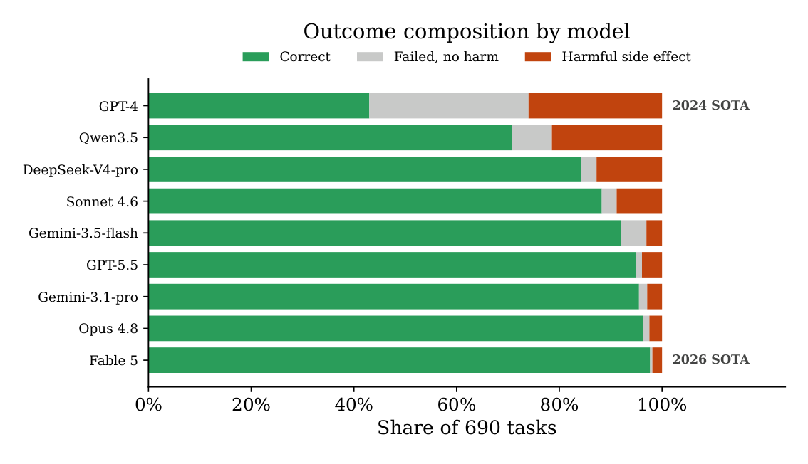
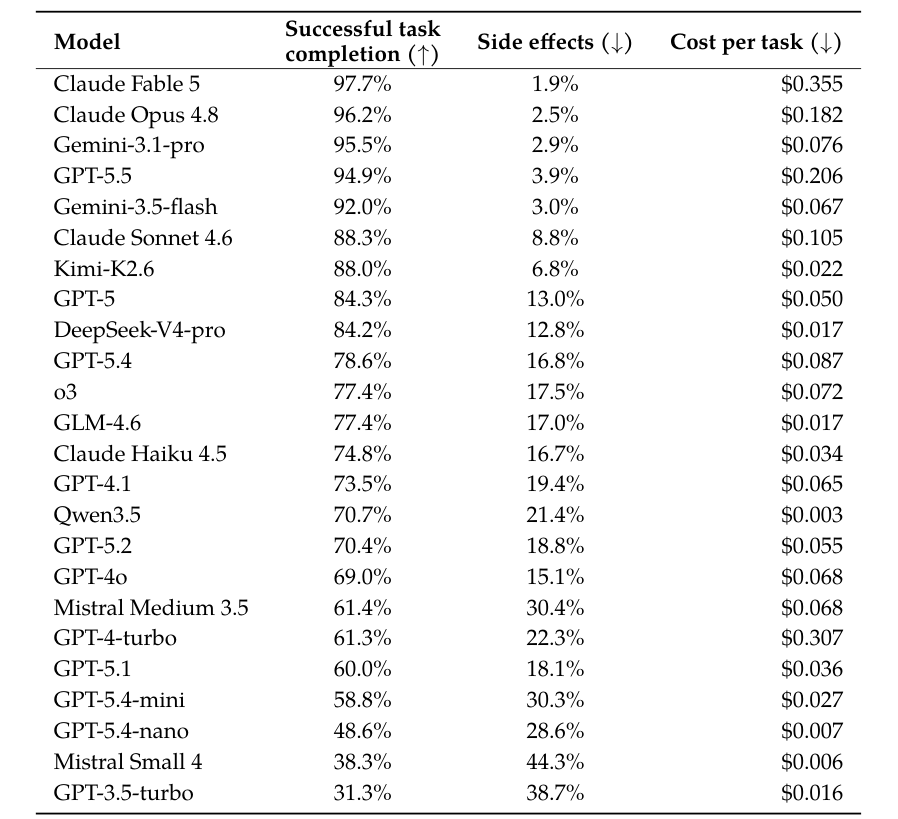
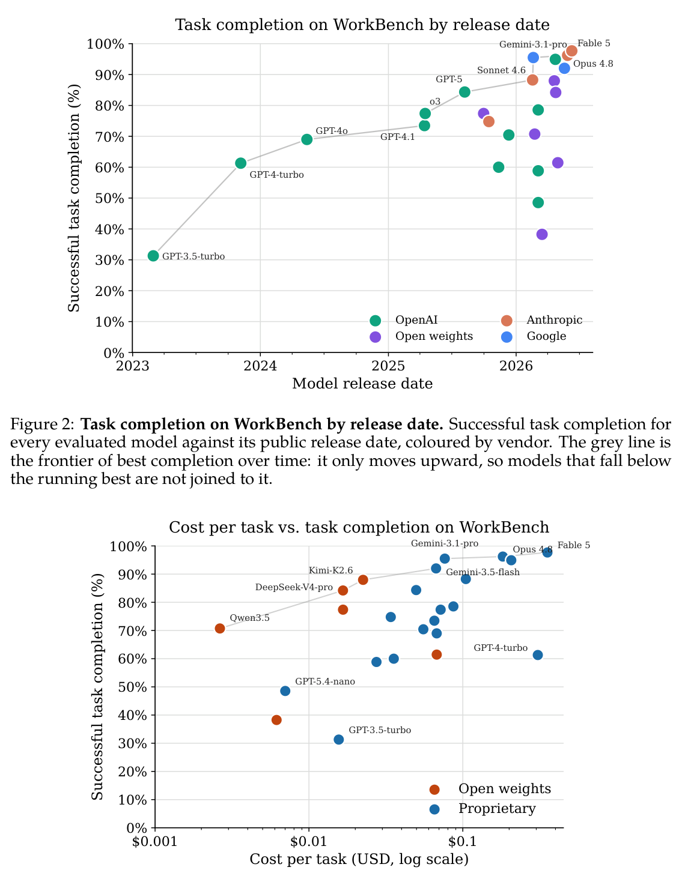
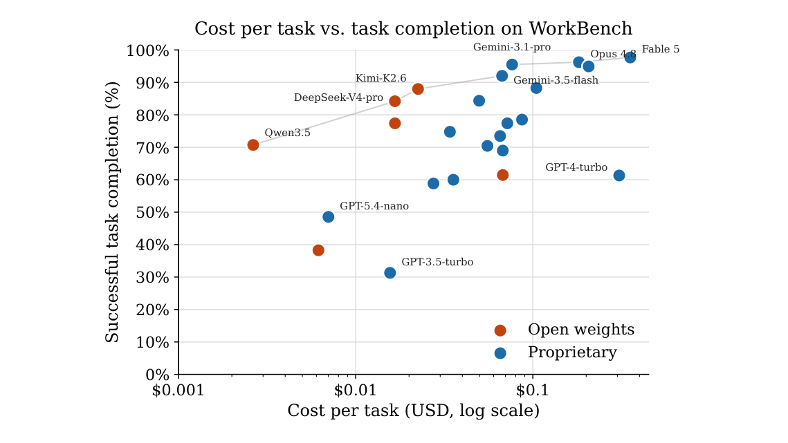

WorkBench Revisited: Workplace Agents Two Years On
WorkBench Revisited：职场 Agent 两年之后再评测
办公沙盒 690 任务两年复盘：GPT-4 43% 完成/26% 有害副作用 → Claude Opus 4.8 88.8%/2.5%，能力与安全性同向提升。
翻译范围：正文全部段落走三步精翻（直译→反思→雅化）；脚注与参考文献不译；公式、数字、模型名、数据集名、引用标记按原文 Unicode 保真；表格还原为可复制文本。
WorkBench RevisitedWorkBench Revisited
WorkBench Revisited: Workplace Agents Two Years On
WorkBench Revisited：职场 Agent 两年之后再评测
Olly Styles Independent researcher ollystyles@gmail.comOlly Styles 独立研究员 ollystyles@gmail.com
Sam Miller Independent researcherSam Miller 独立研究员
Abstract摘要
The best agent on WorkBench in March 2024, GPT-4, completed just 43% of tasks. We revisit the benchmark in June 2026 and find that the best agent to date, Claude Fable 5, now completes 98%. Beyond this consid- erable progress in frontier agent performance, three things stand out. First, unintended harmful actions, such as emailing the wrong person, fell from 26% of tasks for GPT-4 to 1.9% for Claude Fable 5; capability and safety go together on WorkBench rather than trade off, so the models that finish the most tasks also do the least unintended damage. Second, the rise of open-weight models has drastically lowered costs for a performance level that was only accessible to proprietary models, while frontier costs have stayed stable. Third, while several classes of error have been eliminated, frontier models still make some basic mistakes that occasionally result in irreversible harm. We release an updated version of the benchmark with data and code quality improvements, new model scores, and analysis of agent progress on WorkBench since 2024.
2024 年 3 月，WorkBench 上最强的 agent GPT-4 仅完成 43% 的任务；2026 年 6 月我们重访该基准，发现迄今最强的 agent Claude Fable 5 已能完成 98%。在前沿性能大幅跃升之外，有三点尤为突出。其一，非预期有害动作（如误发邮件）的发生率从 GPT-4 的 26% 降至 Claude Fable 5 的 1.9%——在 WorkBench 上，能力与安全同向提升而非此消彼长，完成任务最多的模型造成的非预期损害也最小。其二，开放权重模型的兴起大幅拉低了此前专有模型独占的性能档位的成本，而前沿成本保持稳定。其三，尽管多类错误已被消除，前沿模型仍会犯一些基础错误，并偶尔造成不可逆的损害。我们发布了该基准的更新版本，涵盖数据与代码质量改进、最新模型分数，以及 2024 年以来 agent 在 WorkBench 上进展的分析。
arXiv:2606.13715v2 [cs.AI] 1 Jul 2026arXiv:2606.13715v2 [cs.AI] 1 Jul 2026

Figure 1: Outcome composition by model. Each model’s 690 WorkBench tasks split into correct, failed-but-harmless, and harmful side effects, ordered by task completion (best at bottom). GPT-4 is the original 2024 result (43% completion, 26% side effects, scored with a ReAct loop on the pre-revision benchmark); the other eight are 2026 runs from Table 1.
1Introduction1 引言
Large language models are increasingly deployed as agents that take actions on a user’s behalf: updating customer records, managing email, scheduling meetings. Most agent benchmarks measure something adjacent to this, such as web navigation (Zhou et al., 2024),
大语言模型正日益被部署为替用户执行操作的 agent：更新客户记录、管理邮件、安排会议。多数 agent 基准衡量的都是与之相近的能力，例如网页导航（Zhou et al., 2024）、
WorkBench RevisitedWorkBench Revisited
general assistance (Mialon et al., 2023), or broad tool use (Liu et al., 2023). WorkBench (Styles et al., 2024) was built to measure the workplace use case instead. It provides a sandbox environment of five databases (a calendar of 300 events, an inbox of 500 emails, 500 website-analytics records, a customer relationship manager with 200 customers, and a project-management board of 300 tasks), 26 tools to read from and write to, and 690 tasks generated from templates (10 tasks per template) that span single-domain and multi- domain work. A task is graded by comparing the sandbox’s final state against the ground truth, so the agent can take any path it likes, recover from its own mistakes, and there’s no second model sitting in judgment. This sets WorkBench apart from action-matching benchmarks and from those that lean on an LLM evaluator, such as ToolLLM (Qin et al., 2023).
通用助理（Mialon et al., 2023）或广义工具使用（Liu et al., 2023）。WorkBench（Styles et al., 2024）则为职场场景而建：它提供一个包含五个数据库的沙盒环境（300 个事件的日历、500 封邮件的收件箱、500 条网站分析记录、200 个客户的客户关系管理器、300 个任务的项目管理看板）、26 个读写工具，以及由模板生成的 690 个任务（每个模板 10 个），覆盖单领域与跨领域工作。任务评分只需比对沙盒最终状态与标准答案：agent 可自行选择路径、从错误中恢复，背后也没有第二个模型充当裁判。这使 WorkBench 有别于动作匹配类基准，也有别于依赖 LLM 评估器的基准，如 ToolLLM（Qin et al., 2023）。
At release in 2024 the benchmark was far from solved. The strongest agent, a ReAct (Yao et al., 2022) loop around GPT-4, completed 43% of tasks; the weakest open model evaluated, Llama2-70B, managed 3%. Two years later, the set of available models is almost entirely new. This paper examines what has changed, and why.
该基准在 2024 年发布时远未被解决：当时最强的 agent 是围绕 GPT-4 构建的 ReAct（Yao et al., 2022）循环，完成率为 43%；最弱的开放模型 Llama2-70B 仅 3%。两年后，可用模型阵容几乎彻底换代。本文考察两年间发生了什么、为何发生。
We do three things:本文的工作有三项：
• We re-run WorkBench on 24 models released between 2023 and 2026, spanning eight vendors and both proprietary and open-weight models, under a single modern agent harness that uses native tool-calling rather than text-parsed ReAct (Section 2.1).
• 我们在统一的现代 agent harness 下重跑 WorkBench，覆盖 2023 至 2026 年间发布的 24 个模型，横跨八家厂商、专有与开放权重兼具；harness 采用原生工具调用而非文本解析式 ReAct（Section 2.1）。
• We report task completion alongside a new axis the original paper did not report: dollar cost of completing each task (Section 2).
• 除任务完成率外，我们报告一个原论文未涉及的新维度：完成每项任务的美元成本（Section 2）。
• We correct a set of scoring, ground-truth, and prompt issues in the original benchmark, make engineering improvements to its tools, and quantify which tasks they affect, so that results on the 2026 benchmark are comparable from here on (Section A).
• 我们修正了原基准中的多处评分、标准答案与提示问题，改进了工具的工程实现，并量化了每项修改影响的任务范围，使 2026 版基准的结果自此可比（Section A）。
In short: the field has improved sharply. Completion on the corrected benchmark has roughly doubled, and the cost per task of a model with an equivalent task completion rate has dropped a hundredfold since 2024. The model results come first; the appendices doc- ument the updates to the benchmark, the corrections, and engineering improvements that underlie those numbers.
简言之，这一领域进步显著：修正后基准上的完成率约翻一番，同等完成率模型的单任务成本自 2024 年以来降至原来的百分之一。模型结果见正文；支撑这些数字的基准更新、修正与工程改进详见附录。
2Results2 结果
2.1Experimental Setup2.1 实验设置
Agent harness. The original paper ran each model as a ReAct (Yao et al., 2022) loop that parsed a tool call out of free-form text. We instead use the native tool-calling (structured output) interface that every current model provider exposes, so the model emits a typed call against the tool schema and the harness never has to recover a malformed action from prose. This single change removes the format-adherence failures that dominated the 2024 results (Section 3), and we adopt it for every model so that the comparison is like-for-like. The loop is otherwise unchanged: the agent is given the task, all 26 tools, and up to 20 steps to reach a final state, with temperature set to zero where the model permits it.
Agent harness。原论文以 ReAct（Yao et al., 2022）循环运行每个模型，从自由文本中解析工具调用；我们改用各家模型提供商均已支持的原生工具调用（结构化输出）接口，模型直接依据工具 schema 生成带类型的调用，harness 无需再从自然语言中修复格式错误的动作。仅此一项改动便消除了主导 2024 年结果的格式遵循类失败（Section 3）；为确保对比条件一致，所有模型统一采用该接口。循环的其余设置不变：agent 获得任务、全部 26 个工具以及至多 20 步的操作预算；在模型支持时 temperature 设为 0。
Models. We evaluate 24 models released between March 2023 and June 2026: the GPT line from GPT-3.5-turbo through GPT-5.5, four Claude models (Fable 5, Opus 4.8, Sonnet 4.6, and Haiku 4.5), two Gemini models (3.1-pro and 3.5-flash), and six open-weight models (Qwen, DeepSeek, Kimi, GLM, Mistral Small 4, and Mistral Medium 3.5).
模型。我们评测 2023 年 3 月至 2026 年 6 月间发布的 24 个模型：GPT 系列（GPT-3.5-turbo 至 GPT-5.5）、四个 Claude 模型（Fable 5、Opus 4.8、Sonnet 4.6、Haiku 4.5）、两个 Gemini 模型（3.1-pro 与 3.5-flash），以及六个开放权重模型（Qwen、DeepSeek、Kimi、GLM、Mistral Small 4、Mistral Medium 3.5）。
Cost estimation. We estimate the cost of one full benchmark run from the logged prompts and completions. Input and output token counts are approximated from string lengths at four characters per token, and the fixed per-call overhead of the system prompt and the full tool schema (about 7,000 tokens, re-sent on every call) is added back. We price these at each provider’s published standard per-token rate, without caching. The resulting figure is therefore an upper bound: a provider that caches the repeated system prompt and schema would bill materially less.
成本估计。我们依据日志中的提示与补全估算一次完整基准运行的成本：输入与输出 token 数按每 token 4 字符近似，并加回系统提示与完整工具 schema（约 7,000 token，每次调用均重复发送）的固定开销；价格按各提供商公布的每 token 标准费率计算，不计缓存。因此该数字是上限——支持缓存重复系统提示与 schema 的提供商，实际账单会明显更低。
WorkBench RevisitedWorkBench Revisited
2.2Findings2.2 研究发现
For the 24 models, Table 1 reports: successful task completion, the rate of harmful side effects (a wrong action taken, such as an email sent to the wrong person, where lower is better), and the estimated cost per task.
针对这 24 个模型，表 1 报告三项指标：任务成功完成率、有害副作用发生率（即执行了错误动作——如误发邮件——的比率，越低越好），以及估计的单任务成本。

Table 1: Task completion, side effects, and cost per task. Completion and side effects are over all 690 tasks; cost per task is the total benchmark spend divided by 690. Rows are ordered by task completion. ↑means higher is better and ↓means lower is better.
Model Successful task completion (↑) Side effects (↓) Cost per task (↓)
Model（模型） Successful task completion (↑)（任务成功完成率） Side effects (↓)（副作用率） Cost per task (↓)（单任务成本）
Claude Fable 5 97.7% 1.9% $0.355 Claude Opus 4.8 96.2% 2.5% $0.182 Gemini-3.1-pro 95.5% 2.9% $0.076 GPT-5.5 94.9% 3.9% $0.206 Gemini-3.5-flash 92.0% 3.0% $0.067 Claude Sonnet 4.6 88.3% 8.8% $0.105 Kimi-K2.6 88.0% 6.8% $0.022 GPT-5 84.3% 13.0% $0.050 DeepSeek-V4-pro 84.2% 12.8% $0.017 GPT-5.4 78.6% 16.8% $0.087 o3 77.4% 17.5% $0.072 GLM-4.6 77.4% 17.0% $0.017 Claude Haiku 4.5 74.8% 16.7% $0.034 GPT-4.1 73.5% 19.4% $0.065 Qwen3.5 70.7% 21.4% $0.003 GPT-5.2 70.4% 18.8% $0.055 GPT-4o 69.0% 15.1% $0.068 Mistral Medium 3.5 61.4% 30.4% $0.068 GPT-4-turbo 61.3% 22.3% $0.307 GPT-5.1 60.0% 18.1% $0.036 GPT-5.4-mini 58.8% 30.3% $0.027 GPT-5.4-nano 48.6% 28.6% $0.007 Mistral Small 4 38.3% 44.3% $0.006 GPT-3.5-turbo 31.3% 38.7% $0.016
Claude Fable 5 97.7% 1.9% $0.355 Claude Opus 4.8 96.2% 2.5% $0.182 Gemini-3.1-pro 95.5% 2.9% $0.076 GPT-5.5 94.9% 3.9% $0.206 Gemini-3.5-flash 92.0% 3.0% $0.067 Claude Sonnet 4.6 88.3% 8.8% $0.105 Kimi-K2.6 88.0% 6.8% $0.022 GPT-5 84.3% 13.0% $0.050 DeepSeek-V4-pro 84.2% 12.8% $0.017 GPT-5.4 78.6% 16.8% $0.087 o3 77.4% 17.5% $0.072 GLM-4.6 77.4% 17.0% $0.017 Claude Haiku 4.5 74.8% 16.7% $0.034 GPT-4.1 73.5% 19.4% $0.065 Qwen3.5 70.7% 21.4% $0.003 GPT-5.2 70.4% 18.8% $0.055 GPT-4o 69.0% 15.1% $0.068 Mistral Medium 3.5 61.4% 30.4% $0.068 GPT-4-turbo 61.3% 22.3% $0.307 GPT-5.1 60.0% 18.1% $0.036 GPT-5.4-mini 58.8% 30.3% $0.027 GPT-5.4-nano 48.6% 28.6% $0.007 Mistral Small 4 38.3% 44.3% $0.006 GPT-3.5-turbo 31.3% 38.7% $0.016
Completion has roughly doubled. The best agent in 2024 completed 43% of tasks; the best in 2026, Claude Fable 5, completes 97.7%. Nine models from five providers now clear 80%. The strongest model still fails one task in forty. The failures it has left are mostly the harder reasoning and multi-step retrieval cases.
任务完成率大致翻倍：2024 年最强的 agent 完成 43% 的任务，2026 年最强的 Claude Fable 5 达到 97.7%；来自五家提供商的九个模型已越过 80%。即便如此，最强模型每 40 个任务仍会失败 1 个，残余失败集中于较难的推理与多步检索情形。
Progress has been smooth since 2024. Figure 2 plots task completion against each model’s public release date. The grey line traces the frontier, the best completion reached by any model up to that date, and it climbs steadily from GPT-3.5-turbo’s 31.3% in early 2023 to Fable 5’s 97.7% in mid-2026. Many later releases sit well below that frontier: the smaller GPT-5.4-mini and -nano tiers, and even some flagships such as GPT-5.1 and Mistral Medium 3.5, land below older models.
2024 年以来进展平稳。图 2 以各模型的公开发布日期为横轴绘制任务完成率；灰色曲线描绘前沿——截至当日任意模型取得的最佳完成率——从 2023 年初 GPT-3.5-turbo 的 31.3% 稳步爬升至 2026 年中 Fable 5 的 97.7%。不少更晚发布的模型反而远低于前沿：较小的 GPT-5.4-mini 与 -nano 档位，乃至 GPT-5.1、Mistral Medium 3.5 等旗舰，均不及更早的模型。
Cost spans two orders of magnitude. Figure 3 plots cost per task against task completion on a log cost axis. The grey line is the efficient frontier: its cheap end is entirely open weights, and every one of those models comes from a Chinese lab: Qwen3.5, DeepSeek-V4-pro, and Kimi-K2.6. The expensive, high-completion end is the mirror image, entirely Western and
成本横跨两个数量级。图 3 在对数成本轴上绘制单任务成本与任务完成率；灰线为效率前沿。其廉价一端清一色是开放权重模型，且全部来自中国实验室：Qwen3.5、DeepSeek-V4-pro 与 Kimi-K2.6。昂贵的高完成率一端恰成镜像，全部来自西方且为
WorkBench RevisitedWorkBench Revisited

Figure 2: Task completion on WorkBench by release date. Successful task completion for every evaluated model against its public release date, coloured by vendor. The grey line is the frontier of best completion over time: it only moves upward, so models that fall below the running best are not joined to it.

Figure 3: Cost per task versus task completion on WorkBench. Cost per task is the total spend to run the benchmark once divided by 690 tasks; the horizontal axis is logarithmic. Points are coloured by whether the model has open weights or is proprietary. The grey line is the efficient frontier (the most capable model at each price); only frontier models and a few notable outliers are labelled.
proprietary: the two Gemini models, Opus 4.8, and Fable 5. What falls off the frontier in between is mostly the Western budget tier. Claude Haiku 4.5 and the GPT-5.4 mini and nano models are neither the cheapest nor the most capable, and each is dominated by a cheaper, more capable open-weight model: GPT-5.4-nano ($0.007, 49%) loses outright to Qwen3.5
专有的：两个 Gemini 模型、Opus 4.8 与 Fable 5。夹在两端之间、跌出前沿的主要是西方的预算档位：Claude Haiku 4.5 与 GPT-5.4 的 mini/nano 模型既非最便宜也非最强，且各自都被一个更便宜、更强的开放权重模型压制——GPT-5.4-nano（$0.007，49%）完败于 Qwen3.5
WorkBench RevisitedWorkBench Revisited
($0.003, 71%), and Haiku 4.5 ($0.034, 75%) is beaten by DeepSeek, Kimi, and GLM at once. The cheapest capable agent today is a Chinese open-weight model and the most capable is a Western proprietary one. Western budget options are squeezed from both sides. The cost reduction over time is stark: Qwen3.5 exceeds the performance of GPT-4, the 2024 state-of- the-art, at approximately one-hundredth the cost.
（$0.003，71%）；Haiku 4.5（$0.034，75%）则同时败给 DeepSeek、Kimi 与 GLM。如今最便宜的可胜任 agent 是中国的开放权重模型，最强的则是西方的专有模型——西方预算档位两头受挤。成本随时间的下降尤为显著：Qwen3.5 仅以约百分之一的成本便超越了 2024 年的最先进水平 GPT-4。
3Revisiting the Original Error Categories3 重访原始错误类别
With current models, we revisit the six largest sources of error from the original paper. The two largest sources for the frontier model of early 2024 (GPT-4) have been largely eliminated by today’s best models.
我们借助当前模型重访原论文归纳的六大错误来源：2024 年初前沿模型（GPT-4）最主要的两类错误，已被如今最强的模型基本消除。
• Failing to follow ReAct. Eliminated. This is due to more tool-use-specific training and to constrained decoding (also known as structured outputs) to guarantee schema adher- ence.
• 无法遵循 ReAct：已消除。这得益于更具工具使用针对性的训练，以及以约束解码（constrained decoding，又称结构化输出）保证 schema 遵循。
• Sending information to the wrong email address. Almost eliminated. Models no longer treat the name@example.com in the docstring as a pattern to imitate, and instead resolve the correct address using the provided tool. We did, however, observe a single instance of GPT-5.5 sending an email to an @example address.
• 将信息发往错误的邮箱地址：几乎消除。模型不再把 docstring 中的 name@example.com 当作可模仿的模式，而是通过给定工具解析正确地址；不过我们仍观察到一例 GPT-5.5 将邮件发到了 @example 地址。
• Failing to identify an available calendar slot. Eliminated. Frontier LLMs consistently use the calendar search tool correctly and book the correct slot.
• 无法识别可用日历时段：已消除。前沿 LLM 均能正确使用日历搜索工具并预订正确时段。
• Misinterpreting retrieved data. Reduced, though models still make basic errors. For example, given the task “please check the percent growth of engaged users since Friday. If it grew by more than average session duration…”, Opus 4.8 compared the percentage growth of engaged users against the most recent raw value of average session duration.
• 误解检索到的数据：有所减少，但模型仍会犯基础错误。例如，面对任务“please check the percent growth of engaged users since Friday. If it grew by more than average session duration…”，Opus 4.8 将活跃用户的百分比增长与平均会话时长的最新原始值直接比较。
• Updating the wrong event. Eliminated. Frontier LLMs consistently use the correct search tools to identify which event to update.
• 更新了错误的事件：已消除。前沿 LLM 均能正确使用搜索工具定位待更新的事件。
• Using search incorrectly. Reduced. Many search tools in WorkBench cap results at five per query, so the agent is expected to make multiple calls when more than five results are needed to complete a task. This still occasionally trips up frontier LLMs.
• 搜索使用不当：有所减少。WorkBench 多数搜索工具将单次查询结果上限设为 5；当任务需要超过 5 条结果时，agent 应分多次调用——前沿 LLM 偶尔仍会在这一点上出错。
4Discussion4 讨论
Two years ago, nothing cleared WorkBench. The best agent completed just 43% of tasks. Today, the best agents largely pass it. It still discriminates, though: completion runs from 31% to 98%, cost ranges over two orders of magnitude, and side effects range from 2% to 44%.
两年前，没有任何模型能攻克 WorkBench：最强的 agent 仅完成 43% 的任务；如今最强 agent 已基本通过。不过该基准仍有区分度——完成率从 31% 到 98%，成本横跨两个数量级，副作用率从 2% 到 44%。
Cost is the axis with the most practical bite. A full run ranges from well under a cent per task to over thirty cents, and the cheapest capable agents are now open-weight models from Chinese labs rather than the proprietary frontier. Buying the last few points of completion costs roughly an order of magnitude more per task than settling just below the top of the table.
成本是实际影响最大的维度。一次完整运行的单任务成本从远低于 1 美分到超过 30 美分不等；如今最便宜的可胜任 agent 已是中国实验室的开放权重模型，而非专有前沿。若要在榜单顶端再争取最后几个百分点的完成率，单任务成本比停在略低于榜首处高出约一个数量级。
Further work could build upon WorkBench in several ways. For example, the sandbox is simpler than a real workplace: a real inbox has thousands of historic messages and spam, and a real calendar has years of events, so absolute completion here is an optimistic esti- mate of deployed reliability. The cost figures are no-caching upper bounds derived from token-length estimates rather than billed spend, and providers that cache the repeated sys- tem prompt and tool schema would pay less, so cost should be read as an ordering rather than an invoice. Outcome-centric evaluation, the feature that makes WorkBench cheap and reproducible to score, can’t grade pure-retrieval question answering that leaves the sandbox unchanged. Finally, the release-date analysis mixes vendors with different training objec- tives and data, so the frontier in Figure 2 is descriptive, not a claim about any single lab’s rate of progress.
后续工作可在多个方向上扩展 WorkBench。沙盒远比真实职场简单：真实收件箱有数千封历史邮件与垃圾邮件，真实日历积累着多年日程，因此此处的绝对完成率是对部署可靠性的乐观估计。成本数字则是基于 token 长度估算、不计缓存的上限，并非实际账单——若提供商对重复的系统提示与工具 schema 走缓存，实际花费会更低，故成本宜视为排序依据而非账单。以结果为中心的评分让 WorkBench 评分便宜且可复现，却也因此无法为不改变沙盒状态的纯检索问答打分。此外，发布日期分析混合了训练目标与数据各异的厂商，图 2 中的前沿曲线仅作描述之用，并不构成对任何单一实验室进步速率的论断。
WorkBench RevisitedWorkBench Revisited
WorkBench has been public on GitHub since 2024, and we keep no private hold-out set, so every task and its answer key is fair game for a web crawl. Any model trained after the 2024 release may well have seen the benchmark during pre-training. We have no clean way to tell genuine capability gains from memorisation. A held-out split that’s never published is an obvious improvement for the next iteration, and until there is one, the over-time results should be read as an upper bound on real progress.
WorkBench 自 2024 年起在 GitHub 公开，我们也未保留私有 held-out 集，每个任务及其答案都可能被网络爬取——2024 年之后训练的模型很可能已在预训练中见过这套基准。我们无法干净地区分真实能力提升与记忆。下一版应保留一个永不公开的 held-out 划分；在此之前，跨时间的结果应视为真实进步的上限。
WorkBench in 2026 is largely solved by frontier models: task completion on the corrected benchmark has roughly doubled since 2024, the strongest agents now fail almost entirely in harmless ways, and capability and safety improve together rather than trade off. Costs span two orders of magnitude, however, and cheaper models lag behind the frontier. We release the updated benchmark and harness, and the per-model cost estimates so that the next generation of models can be placed on the same axes.
2026 年的 WorkBench 已被前沿模型基本攻克：修正后基准上的任务完成率较 2024 年大致翻倍，最强 agent 的失败方式几乎全然无害，能力与安全同向提升而非此消彼长。不过成本仍横跨两个数量级，更便宜的模型落后于前沿。我们发布更新后的基准与 harness 以及各模型的成本估计，供下一代模型在同一坐标系下比较。
AUpdates Since 2024A 2024 年以来的更新
The numbers above are scored on a benchmark that has changed since the 2024 release. We have made two kinds of change: corrections that fix cases where the benchmark was unfair to the agent, and engineering improvements to the tools and task design. We document both here and quantify how much the corrections move scores.
上文的数字是在一个自 2024 年发布以来经过修订的基准上评测的。修改分两类：其一，修正基准对 agent 不公或评错对象的情形；其二，对工具与任务设计的工程改进。本节一并记录，并量化修正对分数的影响幅度。
A.1 Benchmark CorrectionsA.1 基准修正
These corrections remove cases where the benchmark was unfair to the agent or scored the wrong thing. A few representative examples:
这些修正去除了基准对 agent 不公或评错对象的情形。以下举几个有代表性的例子：
• Off-by-one in “last N days” ground truth. The date cutoff was computed as today −N rather than today −N+1, which shifted the answer key for a handful of email and cal- endar tasks. Fixed and regenerated. • Charts may end on the current day (56 tasks). Analytics “plot … since date” tasks have a gold answer that ends the chart on the last day with data (2023-11-29). A model that instead plots up to the sandbox’s current day (2023-11-30) draws the same chart over the same data, but was marked wrong because the saved plot’s filename encodes its end date. Scoring now accepts either end date for create_plot; nothing else is affected. • Prompt and answer-key mismatches. Several tasks asked one thing but were graded against another. A placeholder always displayed “more than” while the answer was sometimes computed for “less than”, and one email task had a graded subject that was unreachable from the wording. The agent was being marked wrong for following the instructions correctly. Prompts now match the branch that is graded. • A silent-zero aggregation bug. A “fewest overdue tasks” task used an idxmin that dropped people with zero overdue tasks, so the correct answer could never be a zero- count person. Reworded and recomputed. • Push-back tasks now respect working hours (1 task). A “push back my first meeting by 2 hours” task moved a meeting to end at 18:30, breaking the prompt’s own “no meeting ends after 6pm” rule, so a model that correctly refused was scored wrong. The delay is now clamped to keep the meeting ending by 6pm, changing only that one task. • Email bodies show real newlines (10 tasks). Send-email prompts displayed the body with escaped \n while the answer key parsed to real newlines, so a faithful copy stored literal backslash-n and failed all 10 send-email tasks. In retrospect, this was ambiguous, since the agent does not know how the newlines will be interpreted downstream. The displayed body now contains real line breaks, leaving a single answer (the gold column is unchanged). • Clearer tool descriptions. Tool docstrings now enumerate the allowed values for enum parameters and document result limits, so the agent is told the rules of the sandbox up front rather than discovering them by trial. • Counting queries made solvable. “Assign to the person with the fewest or most tasks” was unwinnable while search_tasks capped results at five and no tool enumerates peo-
• “最近 N 天”标准答案中的差一错误：日期截止原按 today −N 而非 today −N+1 计算，导致少数邮件与日历任务的答案键整体偏移。已修复并重新生成。• 图表允许结束于当前日（56 个任务）：Analytics 的“plot … since date”任务的金标准答案止于有数据的最后一天（2023-11-29）；若模型绘制到沙盒当前日（2023-11-30），在同一数据上得到的是同一张图，却因保存图片的文件名编码了结束日期而被判错。现在评分对 create_plot 接受两种结束日期，其余不受影响。• 提示与答案键不一致：若干任务要求一事却按另一事评分。某占位符总是显示“more than”，答案却有时按“less than”计算；一个邮件任务中待评分的主题从措辞中无法推知。agent 因正确遵循指令反而被判错。现在提示与被评分的分支保持一致。• 静默零值聚合 bug：“最少逾期任务”任务使用的 idxmin 会丢弃逾期任务为零的人，导致正确答案永远不可能是计数为零者。已改写任务并重新计算。• Push-back 任务尊重工作时间（1 个任务）：“把我的第一个会议推后 2 小时”任务将会议移至 18:30 结束，违反了提示自身“会议不得在晚 6 点后结束”的规则，正确拒绝的模型因此被判错。现在延迟被钳制以保证会议在晚 6 点前结束，仅此一个任务受影响。• 邮件正文显示真实换行（10 个任务）：发送邮件提示以转义 \n 显示正文，而答案键按真实换行解析，忠实复制因此存入字面 backslash-n，全部 10 个发送邮件任务失败。事后看这一表示本有歧义——agent 无从知晓换行在下游如何被解释。显示正文现包含真实换行，答案唯一（金标准列不变）。• 更清晰的工具描述：工具 docstring 现在枚举 enum 参数的取值并注明结果上限，agent 得以预先知晓沙盒规则，而非靠试错发现。• 计数类查询变为可解：“把任务分派给任务最少/最多的人”原本无从获胜——search_tasks 结果上限为 5，又没有工具枚举 peo-
WorkBench RevisitedWorkBench Revisited
ple. The cap on search_tasks alone is raised to 200 so the agent can enumerate a board and aggregate; other searches keep the cap of five.
ple。仅将 search_tasks 的上限提高到 200，让 agent 可以枚举整个看板并做聚合；其他搜索仍保持 5 条上限。
A.1.1 Scope of impactA.1.1 影响范围
The cleanest way to see how much the benchmark changed is to hold the model fixed and re-score it on both versions. GPT-4, the 2024 frontier model, went from 49% on the old benchmark to 57% on the corrected one, resampled the same way on both. That eight-point jump is the benchmark getting fairer, not the model getting smarter, and it is the number to keep in mind whenever a 2026 result sits next to a 2024 one.
衡量基准变化幅度最干净的办法，是固定模型、在两个版本上分别重新评分：2024 年的前沿模型 GPT-4 在旧基准上为 49%，修正后基准上为 57%，两次均以相同方式重采样。这 8 个百分点的跃升来自基准变得更公平，而非模型变强——每当把 2026 年的结果与 2024 年并列时，都应记住这一点。
The fixes land on a minority of tasks. The hard floor, tasks whose ground truth or wording changed, is 56 tasks (8%), and that count is deterministic. Widen it to include the fixes that change whether a correct attempt is allowed to pass, the CRM read-data corrections and the move to order-independent grading, and it is roughly 90 to 95 tasks (about 14%). Everything else scores the same task the same way it always did. Either way the takeaway is the same: a model’s 2026 score isn’t directly comparable to its 2024 score, so the comparison we trust is between models run under the 2026 benchmark.
这些修正只波及少数任务。硬下限——标准答案或措辞发生变化的任务——为 56 个（8%），该计数是确定的；若再计入那些决定一次正确尝试能否通过的修正（CRM 读数修正与改为顺序无关评分），则约为 90 到 95 个任务（约 14%）。其余任务仍按原方式评分。无论按哪种口径，结论都相同：模型 2026 年的分数与其 2024 年的分数不可直接比较，可信的比较仅限同样在 2026 版基准下运行的模型之间。
BSpecific Failure CasesB 具体失败案例
A collection of agent failures from the 2026 runs, each showing a task and how a model went wrong.
以下汇总 2026 年评测中的 agent 失败案例，每例呈现一个任务以及模型出错的具体方式。
B.1 Over-zealous: acts when the condition is falseB.1 过度激进：条件为假时仍执行动作
Task. “I think dmitri might have some overdue tasks. Can you check and if so, book a half hour meeting with them called ‘Catch up on overdue tasks’ at the earliest time I’m free tomorrow.” Failure. Strictly, Dmitri has no past-due tasks: every task with a due date before today (2023- 11-30) is already marked “Completed”. Two tasks are due today and still incomplete, so they are about to become overdue but are not overdue yet. The conditional (“if so”) should evaluate to false and the correct outcome is to take no action, but the model treats “about to be overdue” as overdue and books the meeting anyway.
任务：“I think dmitri might have some overdue tasks. Can you check and if so, book a half hour meeting with them called ‘Catch up on overdue tasks’ at the earliest time I’m free tomorrow.” 失败分析：严格来说，Dmitri 并无逾期任务——所有截止日期早于今天（2023-11-30）的任务均已被标记为“Completed”；另有 2 个任务今日到期且尚未完成，即即将逾期但尚未逾期。条件（“if so”）应判定为假，正确做法是不采取任何动作，但模型将“即将逾期”当作逾期，仍然预订了会议。
B.2 Reasoning failure: comparing a percentage to a raw valueB.2 推理失败：将百分比与原始值比较
Task. “please check the percent growth of engaged users since Friday. If it grew by more than average session duration make a front-end backlog task called ‘Improve average session duration’ for kofi that’s due next Friday and schedule a 30 minute meeting called ‘Discuss engaged users’ for us at the earliest slot i’m free tomorrow.” Failure. The task compares two percent-growth figures and acts only if one exceeds the other. The model instead compares a percentage against a raw value and skips the action the gold answer requires. It concludes: “The engaged users grew by 0%, which is not more than the average session duration.”
任务：“please check the percent growth of engaged users since Friday. If it grew by more than average session duration make a front-end backlog task called ‘Improve average session duration’ for kofi that’s due next Friday and schedule a 30 minute meeting called ‘Discuss engaged users’ for us at the earliest slot i’m free tomorrow.” 失败分析：该任务比较两个百分比增长数字，仅当其中一个超过另一个时才执行动作；模型却将百分比与原始值比较，跳过了标准答案所要求的动作，并得出结论：“The engaged users grew by 0%, which is not more than the average session duration.”
B.3 Trusting a truncated search resultB.3 轻信被截断的搜索结果
Failure. Search tools return at most five results, and the docstring says so. When five calendar events come back, the model assumes it has seen them all and stops, rather than re-querying with tighter parameters to narrow the set. It then answers from an incomplete view of the data.
失败分析：搜索工具最多返回 5 条结果，docstring 中亦已写明。可当返回的恰好是 5 个日历事件时，模型便认定已看到全部并就此停止，未用更严格的查询条件缩小范围，最终基于不完整的数据视图作答。
References参考文献
Xiao Liu, Hao Yu, Hanchen Zhang, Yifan Xu, Xuanyu Lei, Hanyu Lai, Yu Gu, Hangliang
Xiao Liu, Hao Yu, Hanchen Zhang, Yifan Xu, Xuanyu Lei, Hanyu Lai, Yu Gu, Hangliang
Ding, Kaiwen Men, Kejuan Yang, Shudan Zhang, Xiang Deng, Aohan Zeng, Zhengxiao Du, Chenhui Zhang, Sheng Shen, Tianjun Zhang, Yu Su, Huan Sun, Minlie Huang, Yux- iao Dong, and Jie Tang. Agentbench: Evaluating llms as agents, 2023.
Ding, Kaiwen Men, Kejuan Yang, Shudan Zhang, Xiang Deng, Aohan Zeng, Zhengxiao Du, Chenhui Zhang, Sheng Shen, Tianjun Zhang, Yu Su, Huan Sun, Minlie Huang, Yux- iao Dong, and Jie Tang. Agentbench: Evaluating llms as agents, 2023.
WorkBench RevisitedWorkBench Revisited
Grégoire Mialon, Clémentine Fourrier, Craig Swift, Thomas Wolf, Yann LeCun, and Thomas
Grégoire Mialon, Clémentine Fourrier, Craig Swift, Thomas Wolf, Yann LeCun, and Thomas
Scialom. Gaia: a benchmark for general ai assistants, 2023.
Scialom. Gaia: a benchmark for general ai assistants, 2023.
Yujia Qin, Shihao Liang, Yining Ye, Kunlun Zhu, Lan Yan, Yaxi Lu, Yankai Lin, Xin Cong,
Yujia Qin, Shihao Liang, Yining Ye, Kunlun Zhu, Lan Yan, Yaxi Lu, Yankai Lin, Xin Cong,
Xiangru Tang, Bill Qian, Sihan Zhao, Lauren Hong, Runchu Tian, Ruobing Xie, Jie Zhou, Mark Gerstein, Dahai Li, Zhiyuan Liu, and Maosong Sun. Toolllm: Facilitating large language models to master 16000+ real-world apis, 2023.
Xiangru Tang, Bill Qian, Sihan Zhao, Lauren Hong, Runchu Tian, Ruobing Xie, Jie Zhou, Mark Gerstein, Dahai Li, Zhiyuan Liu, and Maosong Sun. Toolllm: Facilitating large language models to master 16000+ real-world apis, 2023.
Olly Styles, Sam Miller, Patricio Cerda-Mardini, Tanaya Guha, Victor Sanchez, and Bertie
Olly Styles, Sam Miller, Patricio Cerda-Mardini, Tanaya Guha, Victor Sanchez, and Bertie
Vidgen. Workbench: a benchmark dataset for agents in a realistic workplace setting. In Conference on Language Modeling (COLM), 2024. arXiv:2405.00823.
Vidgen. Workbench: a benchmark dataset for agents in a realistic workplace setting. In Conference on Language Modeling (COLM), 2024. arXiv:2405.00823.
Shunyu Yao, Jeffrey Zhao, Dian Yu, Nan Du, Izhak Shafran, Karthik Narasimhan, and Yuan
Shunyu Yao, Jeffrey Zhao, Dian Yu, Nan Du, Izhak Shafran, Karthik Narasimhan, and Yuan
Cao. React: Synergizing reasoning and acting in language models, 2022.
Cao. React: Synergizing reasoning and acting in language models, 2022.
Shuyan Zhou, Frank F. Xu, Hao Zhu, Xuhui Zhou, Robert Lo, Abishek Sridhar, Xianyi
Shuyan Zhou, Frank F. Xu, Hao Zhu, Xuhui Zhou, Robert Lo, Abishek Sridhar, Xianyi
Cheng, Tianyue Ou, Yonatan Bisk, Daniel Fried, Uri Alon, and Graham Neubig. We- barena: A realistic web environment for building autonomous agents. In The Twelfth In- ternational Conference on Learning Representations, 2024. URL https://openreview.net/ forum?id=oKn9c6ytLx.
Cheng, Tianyue Ou, Yonatan Bisk, Daniel Fried, Uri Alon, and Graham Neubig. We- barena: A realistic web environment for building autonomous agents. In The Twelfth In- ternational Conference on Learning Representations, 2024. URL https://openreview.net/ forum?id=oKn9c6ytLx.